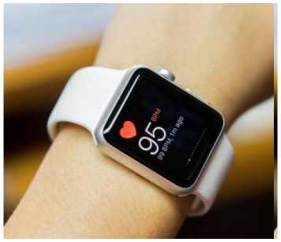

Health Track

Frequência

SMARTHWATCH
Batimentos cardíacos por minuto, quantidade de calorias gastas, tempo percorrido, passos diários... de fato, os relógios tecnológicos auxiliam muito os praticantes de atividades físicas. Os modelos, que ganham novas funções e formatos a cada atualização, são bons aliados nos exercícios e entregam detalhes de uma prática que, muitas vezes, podem ser desconhecidos para o praticante....
 Rua Nove de Julho
São Paulo, Sp
Aberto
Rua Nove de Julho
São Paulo, Sp
Aberto07:00am — 10:30pm